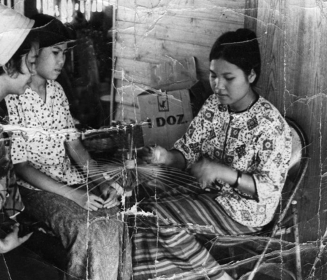
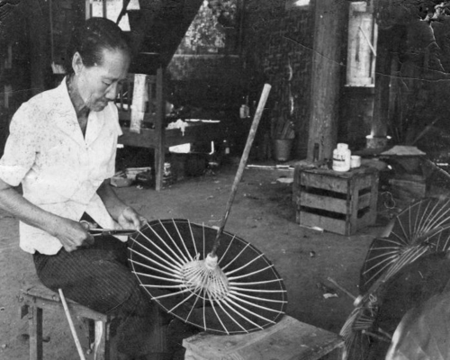
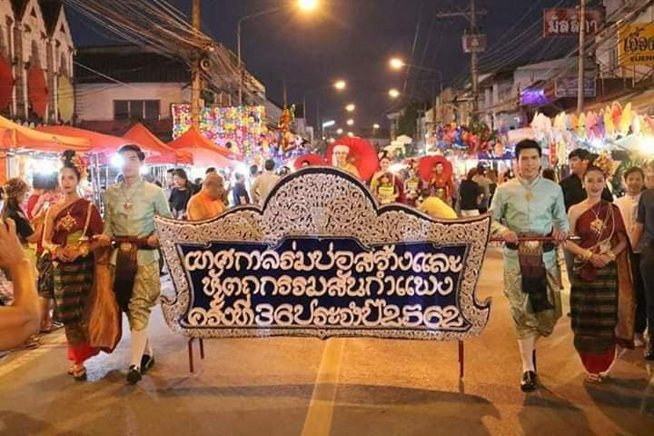

งานร่มบ่อสร้าง
ความเป็นมา
เมื่อประมาณ 100 กว่าปีก่อน มีพระภิกษุรูปหนึ่งชื่อ “พระอินถา” อาศัยอยู่ในสำนักวัดบ่อสร้าง ท่านได้เดินธุดงค์ไปยังสถานที่ต่าง ๆ จนครั้งหนึ่งท่านได้ธุดงค์ไปในประเทศพม่าได้มีชาวบ้านนำกลดมาถวาย เพราะเห็นว่าท่านไม่มีกลด หลังจากที่ให้ศีลให้พรกับผู้นำมาถวายแล้ว ท่านก็ได้เอ่ยถามชาวพม่าผู้นั้นว่า กลดนี้เจ้าเป็นคนทำหรือ เจ้าช่วยพาอาตมาไปดูซิว่ามีแหล่งทำอยู่ที่ใด หลังจากที่พระอินถาได้เดินทางไปที่หมู่บ้านทำกลดในพม่า ท่านได้เห็นชาวบ้านทำร่มใช้กางกันแดดกันฝนได้ ซ้ำยังเห็นว่าชาวบ้านทำร่มขนาดใหญ่ที่ใช้สำหรับเป็นร่มในพิธีงานทางศาสนา

ลักษณะ
ร่มบ่อสร้างนั้นเป็นสินค้าที่สร้างชื่อเสียงให้แก่จังหวัดเชียงใหม่มาช้านานหลายชั่วอายุคนแล้ว ซึ่งนักท่องเที่ยวที่ เดินทางไปเที่ยวเชียงใหม่ส่วนใหญ่จะต้องแบ่งเวลาแวะเวียนไปที่อำเภอสันกำแพง เพื่อชมและเลือกซื้อร่มบ่อสร้าง ที่“บ้านบ่อสร้าง”เป็นที่ระลึกติดมือกลับมา ถือเป็นสินค้าพื้นเมืองที่ได้รับความนิยมอย่างมากในหมู่นักท่องเที่ยว ทั้งชาวไทยและชาวต่างประเทศ สาเหตุที่เรียกว่าร่มบ่อสร้างเพราะร่มนี้ผลิตกันที่บ้านบ่อสร้าง สมัยก่อนชาวบ้านจะ ทำร่มกันใต้ถุนบ้าน แล้วนำออกมาวางเรียงรายเต็มกลางลานบ้านเพื่อผึ่งแดดให้แห้ง

วัตถุประสงค์
1.เพื่อเป็นการอนุรักษ์ศิลปวัฒนธรรมภูมิปัญญาท้องถิ่นของล้านนาตลอดจนสืบทอดวัฒนธรรมประเพณีอย่างต่อเนื่อง
2.เพื่อเป็นการส่งเสริมการประกอบอาชีพด้านศิลปหัตถกรรมพื้นบ้านของประชาชน
3.เพื่อทำให้ราษฎรมีงานทำอย่างต่อเนื่อง เสริมสร้างรายได้อย่างเป็นรูปธรรม
4.เพื่อกระตุ้นให้ราษฎรผู้ประกอบอาชีพทำร่มและหัตถกรรมท้องถิ่นได้ ตระหนักถึงวิธีการที่ จะพัฒนาสินค้า ร้านค้าและชุมชนของตนเอง ให้เป็นแหล่งท่องเที่ยว
5.เพื่อสนับสนุนให้ท้องถิ่นเป็นแหล่งท่องเที่ยวทางศิลปวัฒนธรรม เป็นการดึงดูดให้นักท่องเที่ยวทั้งชาวไทยและชาวต่างประเทศ ได้เดินทางเข้าชมแหล่งที่ผลิตหัตถกรรมเป็นการประสานสอดคล้อง กับแผนพัฒนาการท่องเที่ยวจังหวัดเชียงใหม่